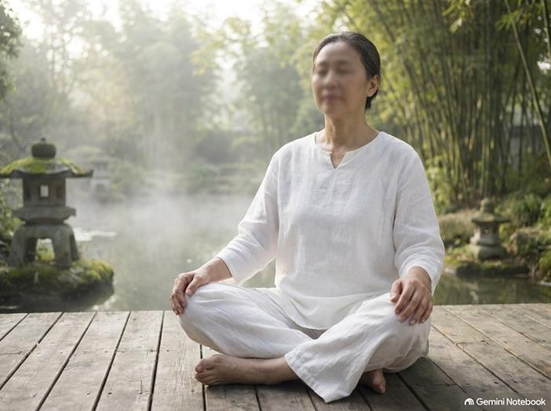
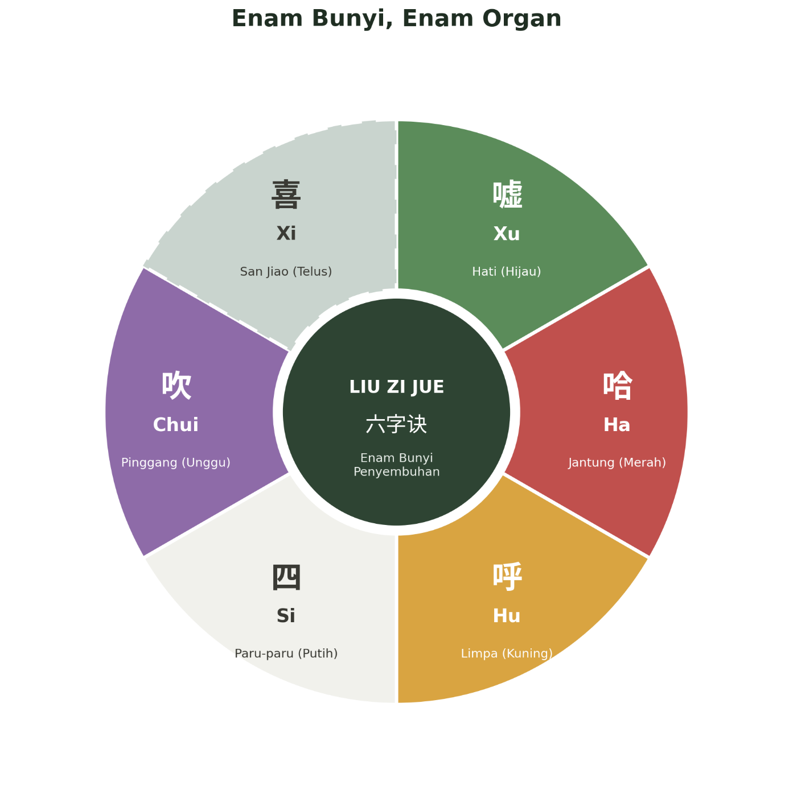
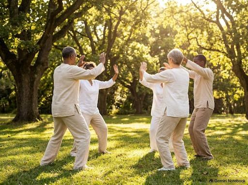

Enam Bunyi Penyembuhan: Teknik Pernafasan Kuno Yang Kembali Popular
Liu Zi Jue, teknik qigong berusia 1,500 tahun yang berasaskan enam bunyi hembusan nafas yang ringkas, kini kembali mendapat perhatian ramai untuk penjagaan kesihatan organ dalaman.

Di bawah keheningan pagi sebelum bahang matahari mula mencengkam, taman-taman awam di serata China sering kali dihiasi dengan kehadiran kumpulan-kumpulan kecil yang berdiri santai. Dengan lutut yang dilonggarkan secara relaks dan tapak tangan yang melengkung lembut, mereka menghembus nafas secara perlahan dan terkawal menerusi alunan bunyi yang panjang: xu, he, hu, si, chui, xi. Pandangan sekilas oleh orang ramai mungkin menganggapnya sebagai gabungan ringkas antara meditasi dan senaman suara. Walau bagaimanapun, amalan ini sebenarnya merupakan salah satu warisan terapi pernafasan tertua dalam perubatan tradisional Cina iaitu Enam Bunyi Penyembuhan (Liu Zi Jue), yang kini kian mendapat tempat di persada dunia.
Sejarah amalan ini sebenarnya boleh dikesan seawal abad kelima dan ketemukan menerusi penulisan teks perubatan dan Taois kuno. Pada zaman tersebut, para pengamal perubatan mula memperkenalkan kaedah hembusan nafas khusus bertujuan 'menyingkirkan' tenaga yang tersumbat atau berlebihan daripada organ dalaman. Selang beberapa abad, amalan warisan ini akhirnya diseragamkan serta dipermudahkan oleh Pentadbiran Sukan Umum China untuk diiktiraf sebagai salah satu rutin rasmi Qigong Kesihatan bentuk senaman yang kini giat diajar di hospital, pusat komuniti, mahupun program pemulihan fizikal.
Enam Bunyi, Enam Organ: Formula Keseimbangan Tubuh
Prinsip Liu Zi Jue sebenarnya sangat mudah. Setiap satu daripada eloquence bunyi hembusan nafas ini berkait rapat dengan organ utama badan kita. Apabila kita melaraskan bentuk mulut dan kerongkong dengan betul semasa menghembus nafas, ketegangan fizikal serta tenaga negatif pada organ tersebut dapat dibebaskan. Bagi membantu fokus penyembuhan, setiap organ ini juga boleh dibayangkan pulih bersama visualisasi warna cahayanya yang tersenzuri:
- Xu (嘘) - Organ Hati (Cahaya Hijau)
- Ha (哈) - Organ Jantung (Cahaya Merah)
- Hu (呼) - Organ Limpa (Cahaya Kuning)
- Si (四) - Organ Paru-paru (Cahaya Putih)
- Chui (吹) - Organ Buah Pinggang (Cahaya Unggu)
- Xi (喜) - "Triple Burner" (San Jiao), iaitu rangkaian fungsi yang mengalirkan cecair dan tenaga hayat ke seluruh rongga tubuh. (Cahaya Telus)

Panduan Sesi Latihan: Langkah Demi Langkah
1. Persediaan Postur dan Minda
Sesi latihan biasanya dimulakan dengan memilih postur badan yang paling selesa, sama ada berdiri atau duduk. Pastikan tulang belakang anda tegak, bahu diturunkan dalam keadaan relaks, dan mulakan dengan mengatur pernafasan supaya menjadi perlahan serta sekata.
2. Teknik Pernafasan dan Bunyi
- Tarik Nafas: Bagi setiap bunyi, tarik nafas anda secara perlahan-lahan melalui hidung.
- Hembus Nafas & Alunkan Bunyi: Seterusnya, hembus nafas secara lembut sambil membentukkan rongga mulut mengikut sebutan bunyi yang berkaitan. Bunyi ini haruslah dihasilkan secara senyap (seperti berbisik) atau sangat perlahan, dan biasanya diiringi dengan gerakan tangan atau lengan yang mudah.
- Visualisasi Cahaya: Untuk memudahkan latihan, anda boleh membayangkan setiap organ diselimuti oleh cahaya penyembuhan dengan warna yang berbeza semasa anda bernafas. Visualisasi warna ini sangat membantu dalam mengukuhkan fokus minda anda terhadap proses pemulihan dalaman tubuh.
